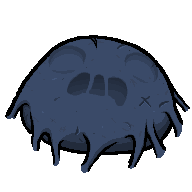
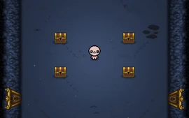

esse chefe só pode ser encontrado no andar ???(blue womb)

esse chefe possui 2 fases em sua luta, em sua primeira fase seu comportamento se ao de chefe blue baby e de chefe isaac, com uma forma parecida com dos personagem, caido e chorando no chão, não te ataca antes de tomar qualquer dano.
em sua segunda fase o chefe se acemeolha a um rosto sendo sufocado, possuindo mais padrões de progeteis que enchem a tela com balas, além de possuir um escudo de dano, que faz com que ele tome menos dano para quanto mais dano você tenha
depois de derrotar o hush pelo menos uma vez, toda vez em que você derrota-lo você pode seguir caminho para os andares sheol, cadedral e void, sendo que o void (antes da verção repetence+ beta) é o unico andar que tem 100% de aparecer depois de derrotar o chefe principal do andar
depois de derrotar ele 3 vezes você libera os andares alternativos